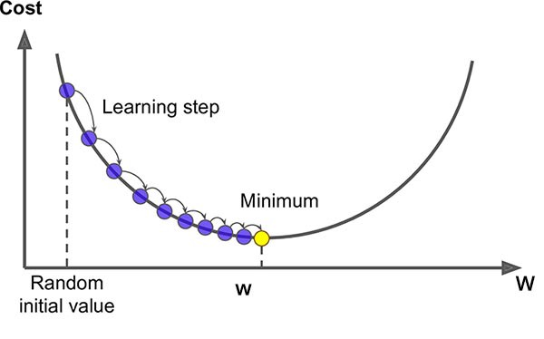

梯度下降

- huuhghhgyg
- 3 min read

梯度下降的过程
- 挑选一个初始值 $w_0$
- 重复迭代参数 $w_{t+1}=w_t-\eta \frac {\partial L(w_t)}{\partial w_t}$，其中：
- $w_t$ 是第 t 次迭代的参数
- $\eta$ 是学习率
- $\frac {\partial L(w_t)}{\partial w_t}$ 是损失函数 $L(w)$ 对参数 $w$ 的梯度
- 沿梯度方向将增加损失函数值，因此需要取负梯度方向，即变化量为 $-\eta \frac {\partial L(w_t)}{\partial w_t}$
学习率 $\eta$：步长的超参数。
示例
优化 x²
💡 以函数求极值的视角来看
假设损失函数为 $L(w)=w^2$，则 $\frac {\partial L(w)}{\partial w}=2w$。
- 初始值 $w_0=5$
- 学习率 $\eta=0.2$
- 迭代次数 5 次
- 求解 $w_5$
这里还默认设置了一个停止条件，即当 $|w_{t+1}-w_t|<0.01$ 时认为已经收敛，停止迭代。
1def gd(w, lr):
2 while abs(w - lr * 2 * w) > 0.01:
3 w = w - lr * 2 * w
4 print(w)
5
6gd(5, 0.2) # 初始值 5，学习率 0.2
13.0
21.7999999999999998
31.0799999999999998
40.6479999999999999
50.3887999999999999
60.23327999999999993
7...
80.0005077997833420796
90.0003046798700052478
100.00018280792200314866
110.0001096847532018892
y=ax+b 拟合
📄代码附件
数据生成
我们首先生成数据 $y$，其公式为： $$ y = 3x + 1/2 + \epsilon $$ 其中，$\epsilon$ 是服从均值为 0，标准差为 0.01 的正态分布噪声。而真正要拟合的函数为 $y=3x+1/2$。
1import numpy as np
2
3# 生成x
4x = np.random.rand(100, 1)
5
6# 生成y
7y = 3 * x + 0.5 + np.random.normal(0, 0.01, (100, 1))
8y.shape
损失及其梯度
损失函数采用均方误差（即平方和损失/样本量）： $$ loss = \frac{1}{n}\sum_{i=1}^{n}(y_i - (ax_i+b))^2 $$
损失函数本身用不到，只是用到通过损失函数求各个输入参数的梯度（偏导集合）。
这里使用的损失函数是 $(y-(ax+b))^2$，其对 $a$ 和 $b$ 的偏导数分别为：
1def loss_partial_a(x, y, a, b):
2 return 2 * (a * x + b - y) * x
3
4def loss_partial_b(x, y, a, b):
5 return 2 * (a * x + b - y)
梯度下降计算过程
1# 初始化w和b
2a = np.random.rand(1, 1)
3b = np.random.rand(1, 1)
4
5print(f"init a={a}, b={b}")
6
7# 训练参数
8lr = 0.1
9epoch = 3
10
11# 训练
12for e in range(epoch):
13
14 # 这里是对于每个样本都计算一次，因此就不涉及平均损失的问题
15 for k in range(len(x)):
16 i = x[k]
17 j = y[k]
18 # print(f"i={i}, j={j}")
19 new_a = a - lr * loss_partial_a(i, j, a, b)
20 new_b = b - lr * loss_partial_b(i, j, a, b)
21
22 a = new_a
23 b = new_b
24 print(f"epoch={e}, k={k}, a={a}, b={b}")
迭代结果
1init a=[[0.23760839]], b=[[0.39863307]]
2epoch=0, k=0, a=[[0.24371687]], b=[[0.46798773]]
3epoch=0, k=1, a=[[0.29139251]], b=[[0.63393353]]
4epoch=0, k=2, a=[[0.4018126]], b=[[0.86619184]]
5epoch=0, k=3, a=[[0.41131305]], b=[[0.90869003]]
6epoch=0, k=4, a=[[0.41032642]], b=[[0.83265673]]
7epoch=0, k=5, a=[[0.42432716]], b=[[0.89015401]]
8epoch=0, k=6, a=[[0.42327588]], b=[[0.88220623]]
9epoch=0, k=7, a=[[0.4301685]], b=[[0.91442126]]
10epoch=0, k=8, a=[[0.42865997]], b=[[0.84015194]]
11epoch=0, k=9, a=[[0.85950176]], b=[[1.27968261]]
12epoch=0, k=10, a=[[0.87845307]], b=[[1.32033154]]
13epoch=0, k=11, a=[[0.86892602]], b=[[1.29000569]]
14epoch=0, k=12, a=[[0.85606747]], b=[[1.23699777]]
15epoch=0, k=13, a=[[0.86349238]], b=[[1.25637342]]
16epoch=0, k=14, a=[[0.85133071]], b=[[1.1580821]]
17epoch=0, k=15, a=[[0.84363037]], b=[[1.0603727]]
18epoch=0, k=16, a=[[0.83911272]], b=[[1.03934112]]
19epoch=0, k=17, a=[[0.89684411]], b=[[1.1534493]]
20epoch=0, k=18, a=[[0.89302841]], b=[[1.13958303]]
21epoch=0, k=19, a=[[1.14469504]], b=[[1.4059118]]
22epoch=0, k=20, a=[[1.12518344]], b=[[1.28439373]]
23epoch=0, k=21, a=[[1.18891208]], b=[[1.37951491]]
24epoch=0, k=22, a=[[1.22565315]], b=[[1.4368382]]
25epoch=0, k=23, a=[[1.24702493]], b=[[1.47058983]]
26...
27epoch=2, k=96, a=[[2.94969047]], b=[[0.51946884]]
28epoch=2, k=97, a=[[2.94882856]], b=[[0.5175241]]
29epoch=2, k=98, a=[[2.94872719]], b=[[0.51584921]]
30epoch=2, k=99, a=[[2.94936074]], b=[[0.51847969]]
注意，这里的每次迭代都理解为沿着梯度方向步进的过程。

批量大小
y=ax+b 拟合的示例中，可以将梯度下降部分的代码改为以下代码，使其成为小批量梯度下降（Mini-batch Gradient Descent）：
1# 训练
2for e in range(epoch):
3
4 # mini-batch
5 for i in range(0, len(x), batch_size):
6 x_batch = x[i:i+batch_size]
7 y_batch = y[i:i+batch_size]
8 new_a = a - lr * np.average(loss_partial_a(x_batch, y_batch, a, b))
9 new_b = b - lr * np.average(loss_partial_b(x_batch, y_batch, a, b))
10
11 a, b = (new_a, new_b)
12
13 print(f"epoch={e}, a={a}, b={b}")
训练批量（batch_size） 的大小会显著影响 学习速度，具体表现在以下几个方面：
每次迭代的计算量
-
小批量（small batch）
- 每次训练迭代时，使用较小的批量（例如 32 或 64）时，每次参数更新需要的计算量较少，因为每次更新的样本数较少。
- 这意味着每次更新后模型的反馈比较快，但每次更新的梯度估计较为嘈杂，导致训练过程中梯度的波动较大。
- 因为每个批次计算的梯度较为不稳定，虽然每次迭代快，但收敛可能需要更多的迭代周期（epochs）才能达到较好的解。
-
大批量（large batch）
- 使用较大的批量（例如 128、256、甚至更大）时，每次训练迭代需要计算的数据量更多，因此每次更新的计算量较大，计算时间也会增加。
- 然而，大批量可以更稳定地估计梯度，因为它基于更多的样本进行计算，因此梯度波动较小，训练过程更平稳。
- 大批量训练可能在每个 epoch 内更新的次数较少，但每次更新都较为精准，因此在较少的迭代中就能收敛，学习过程更为稳定。
训练的收敛速度
-
小批量（small batch）
- 小批量会导致 梯度更新的不稳定性，从而影响模型收敛的平稳性。由于每次计算的梯度是基于较少的样本，梯度估计会有更大的噪声，导致收敛过程可能较为震荡，需要更多的训练周期（epochs）来收敛。
- 然而，这种噪声也有可能帮助模型逃脱局部最小值，从而可能找到更优的解。
-
大批量（large batch）
- 大批量训练通常会 减少梯度的波动，使得每次梯度更新更加精确，收敛过程更加稳定，通常可以在较少的迭代周期内收敛。
- 然而，如果批量过大，可能会导致训练变得过于保守，无法快速跳出局部最小值，可能错过一些更优的解。
硬件效率和计算加速
-
GPU/并行计算
- 使用较大的批量大小通常会更好地利用 GPU 或 TPU 等硬件的并行计算能力。因为现代深度学习框架（如 TensorFlow、PyTorch）和硬件都优化了批量计算，较大的批量大小能够加速矩阵运算，提高计算效率。
- 较大的批量在硬件加速下每次迭代的计算时间会比较短，虽然每个批次的计算量更大，但每个 epoch 的训练时间往往更短。
-
内存使用
- 大的批量大小会占用更多的内存，因此在内存有限的情况下可能无法使用过大的批量。
- 适当的批量大小可以有效地平衡计算效率与内存使用，避免内存溢出。
学习率（Learning Rate）和批量大小的关系
- 学习率调整：批量大小和学习率之间有一个相互关系，通常 批量越大，学习率越大，这是因为大批量计算的梯度更精确，允许模型在更新时使用较大的步长。小批量训练由于梯度噪声较大，通常需要较小的学习率以避免模型的参数更新过于剧烈。
- 大批量 + 高学习率：加速训练，通常能在较少的周期内收敛。
- 小批量 + 低学习率：能够帮助模型更细致地优化参数，防止过度震荡。
泛化能力
- 小批量训练：由于小批量的梯度估计包含更多噪声，它在某些情况下可以帮助模型 避免过拟合，从而具有更好的 泛化能力。这种噪声实际上可以作为一种 正则化 方法，有助于提高模型在未见数据上的表现。
- 大批量训练：大批量通常使得梯度计算更加准确，优化过程更稳定，但由于每次更新较为平滑，模型有时可能会 过拟合 训练集，导致泛化能力降低。
结论
- 小批量：每次训练更新快、计算效率高，但收敛过程可能不稳定，且需要更多的迭代周期才能达到理想的解。
- 大批量：计算更稳定，能更快收敛，但每次更新的计算量大，可能导致过拟合，需要调节学习率和批量大小的关系。
选择合适的批量大小需要根据实际情况来决定。通常，使用 中等大小的批量（如 64、128、256）能提供较好的计算效率与稳定性。在硬件资源允许的情况下，可以进行实验并调整批量大小和学习率，以找到最佳的训练速度和收敛效果。